空洞騎士重現 - Tilemap

在過去的場景建構時，我們都是直接使用 sprite 來搭建出所需的地面與牆壁，但在開發初期時不太可能這樣一磚一瓦的把整張地圖建起來，效率太低且不易修改，需要一個更快速呈現出地圖輪廓的方式，這時候就可以靠 unity 的 Tilemap 了，能讓我們以繪圖的方式來勾勒地圖，繪製完成也能直接加上 collider 變成實際玩家接觸的地面與牆壁 ~~~
Tilemap

Tilemap 常見於一些平面 2D 遊戲的地圖鋪設，尤其是像素風遊戲，例如早期的寶可夢遊戲，整張地圖是由一個一個方塊拼成，實際上只需要幾種方塊就能創造出多樣的地圖，但在此不是為了這個原因來使用他的，要在 unity 中使用 Tilemap 需要以下步驟:
-
創建 Tilemap 2D - Hierarchy Panel 左鍵點選
2D Object > Tilemap > Rectangular，創造會出現兩個物件 Grid & Tilemap，Grid 的設定決定 Tilemap 的方塊的大小，太小可能會使地圖有奇特的凹凸、太大則會使地圖缺乏變化性，我個人覺得預設值就很合適了。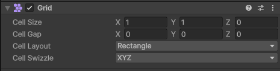
至於 tilemap 本身只需要設定 sorting layer 就好: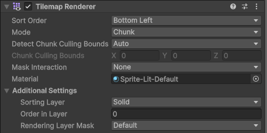
-
創建 Tile Palette - Grid & Tilemap 是我們的繪圖紙，接下來要創建我們的調色盤，左鍵點選 Project Asset Panel
Create > 2D > Tile Palette > Rectangular，會產生一個調色盤物件，點選他會在 Scene 出現 Open Tile Palette 的選項: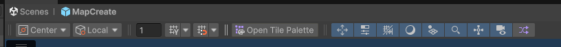
點下去就會看到下面右側視窗，預設是空的，每一個格子都可以放置 sprite 來當成繪圖方塊，由於我們只是要用 tilemap 來打草稿，所以不需要實際的 sprite，我就直接匯入 32 x 32 的色塊來繪圖: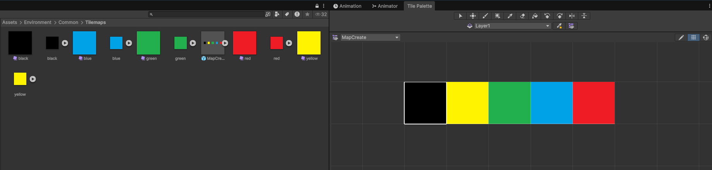
為了確保繪製出來的 Grid & Tilemap 是大小相符的，記得要讓 sprite 的 pixels per unit 與圖片大小相符: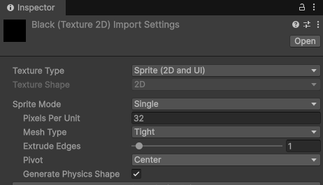
-
快樂繪圖時間 - 接著就用畫筆選個顏色在 Scene 上開心作畫了 ~~~ 除了畫筆也有填滿跟清除等功能，跟以前小畫家蠻像的:
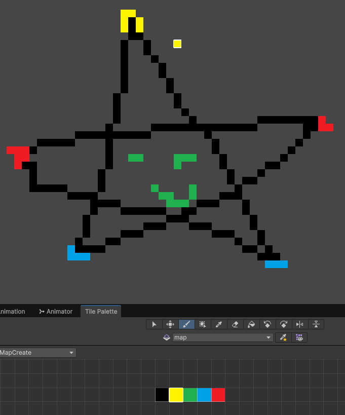
Create Map
Scope
雖然 tilemap 可以讓我們自由繪製地圖，但繪製的時候還是要注意一些比例原則，像是:
- tile 太小 - tile 小的好處在於能繪製出各種結構，但也可能畫出一些角色無法通過的路徑，除非是設計成特殊形態才能通過，不然這種瑕疵路徑蠻惱人，玩家以為那邊還有路在那邊找半天 XD。有一種勞永逸的處理方式是把先前 grid 的Cell Size 調大，還要把 tile palette 用到的 sprite PPU 下調同樣倍率，這樣才能把 Cell 填滿。
- 上帝視角 - 在繪製地圖時我們會有預先設定好的路線，玩家從左往右移動、發現祕密路徑、二段跳、最後抵達上方平台，但我們很容易忘掉 玩家的視野有限，鏡頭能呈現的畫面是固定的，像是底下這種設計就很糟:
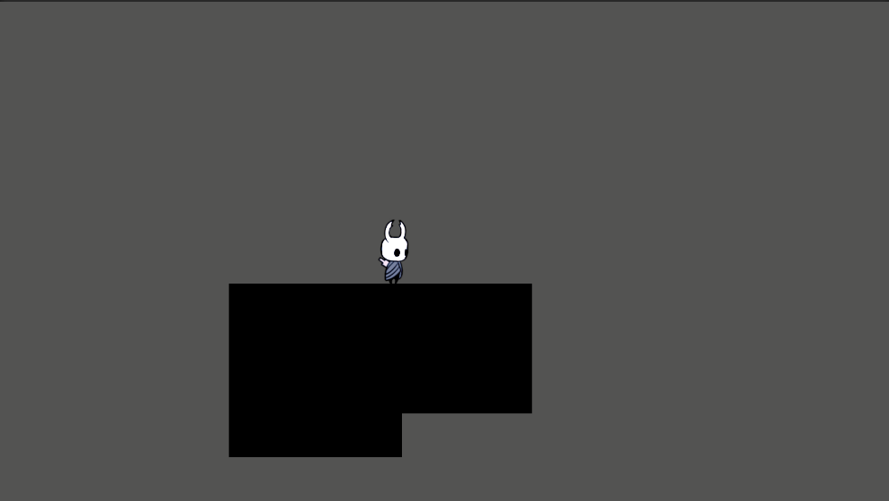
完全看不出來下一個移動方向在哪邊 !!! 該往左還是往右都看不出來，除非是想營造神秘感，例如某種迷霧大峽谷，不然就得讓玩家明白下一個移動方向是哪邊，其實這邊是希望讓玩家往上攀達，所以把上面區塊搬下來一點，這樣就好多了: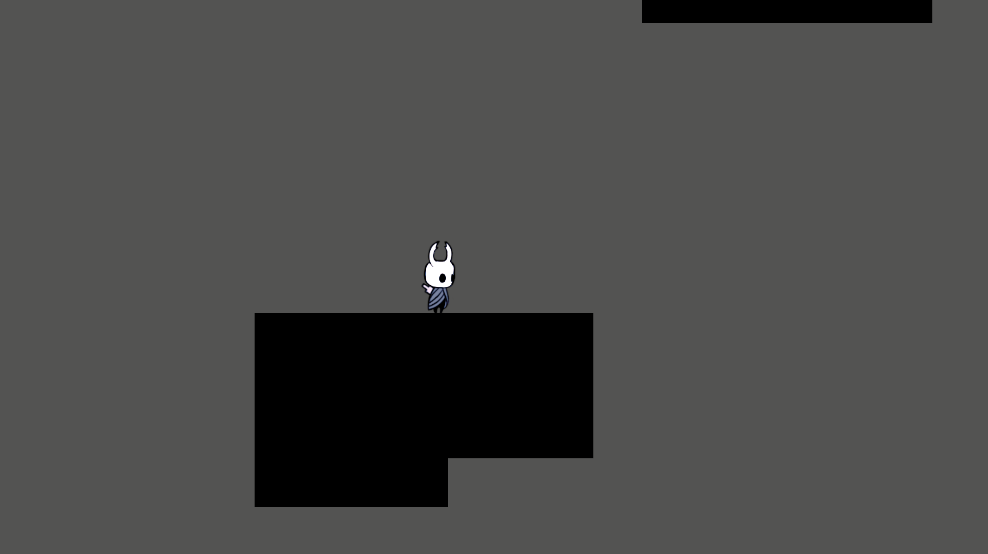
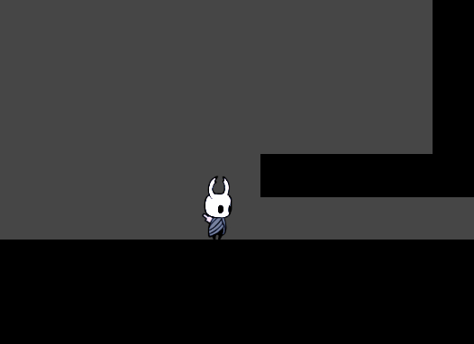
Collider
為了讓這些繪製出來的牆壁地面變成小騎士能實際接觸的物件，得替 tilemap 加上 collider，詳細設定如下圖，tilemap 有屬於自己的 tilemap collider 2D，不過每個獨立的 tile 都自己一個 collider 對系統負擔太大，這邊加上 composite collider 2D 來 merge collider，記得 geometry type 要選 Polygons，另外就是 composite collider 自動附贈的 Rigidbody 2D 要跟之前一樣改成 static，不然場景會自由落體 ~~~
記得 tilemap 的 Layer 要設定成先前 ground detection 採用的 Layer。
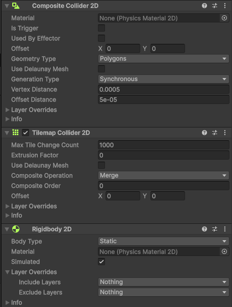
其實 Tilemap + Collider 是絕配，因為 tilemap 是方格排列所以不會誤差導致的 gap 存在，在之前的實作中 collider 是直接綁在 sprite 上，然後 sprite 間沒有排列準確出現微小高低差，這樣就會直接卡住小騎士的移動 @@。
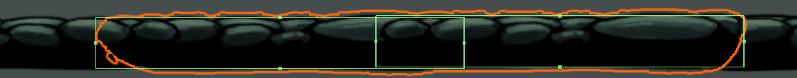
Copy & Paste
設定好 collider 之後我們就能啟動 game 模式讓小騎士在地圖上奔馳，同時在 scene 頁面上同步修改地圖，這樣就能確保玩家看到的景色符合開發人員的預期，不過要注意的是，game 模式下對 scene 的編輯都只是暫時的，一旦 game 模式結束就會消失 !!!
不過幸好就跟大部分的 component 一樣，tilemap 可以進行複製，只要記得在結束 game 模式前複製 tilemap，然後再使用 Paste Component Values 就能把編輯的內容都保存下來 ~~~
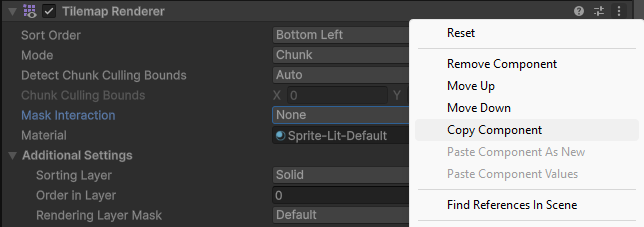
後製
這些 tilemap 加入 collider 就能作為實際場景的牆壁，部分 tilemap 也可以做為設定導引，像是我用藍色代表水池、黃色代表入口點，但這些都只是早期開發用而已，之後還是需要進行後製，就是得像之前一樣用 sprite 點綴，把這些 tilemap 掩蓋起來，那才是最費工的部分 ><。
我現階段還沒辦法弄得很好，就不獻醜了，之後在後續文章中的場景一點點展現吧 ~~~
總結
本次學習用最簡單的 tilemap 功能來規劃地圖，讓開發過程能快速的驗證與測試，內容上有點過於簡單，連程式都沒碰到呢 XD，下一回就來點難的，實作小騎士最為複雜的動作 - 骨釘攻擊。